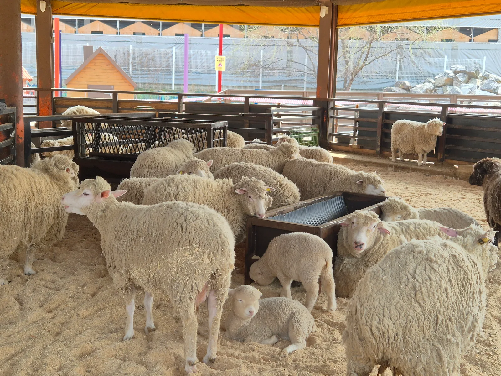
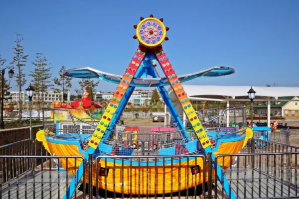
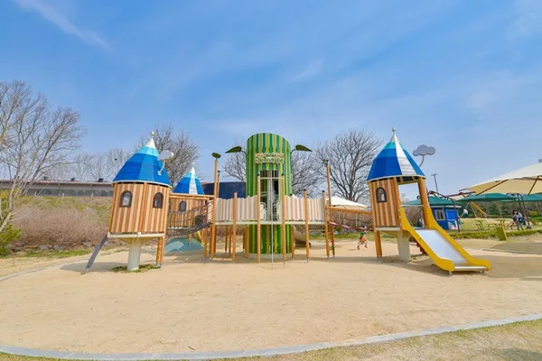
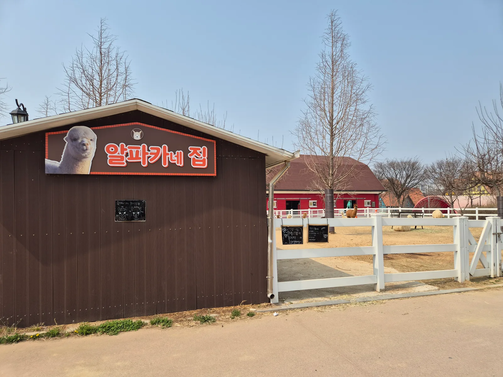
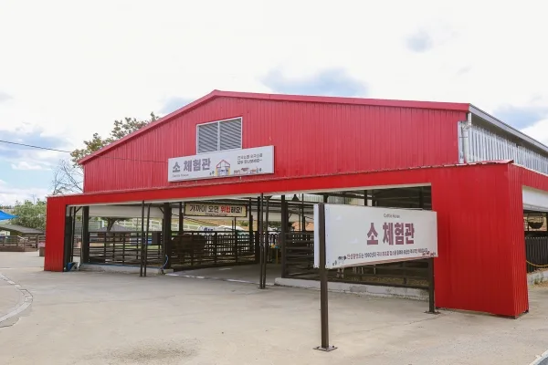
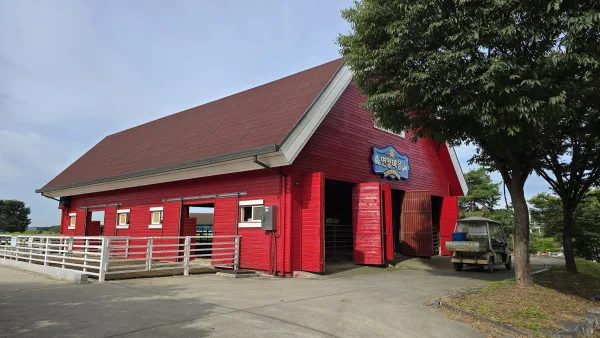
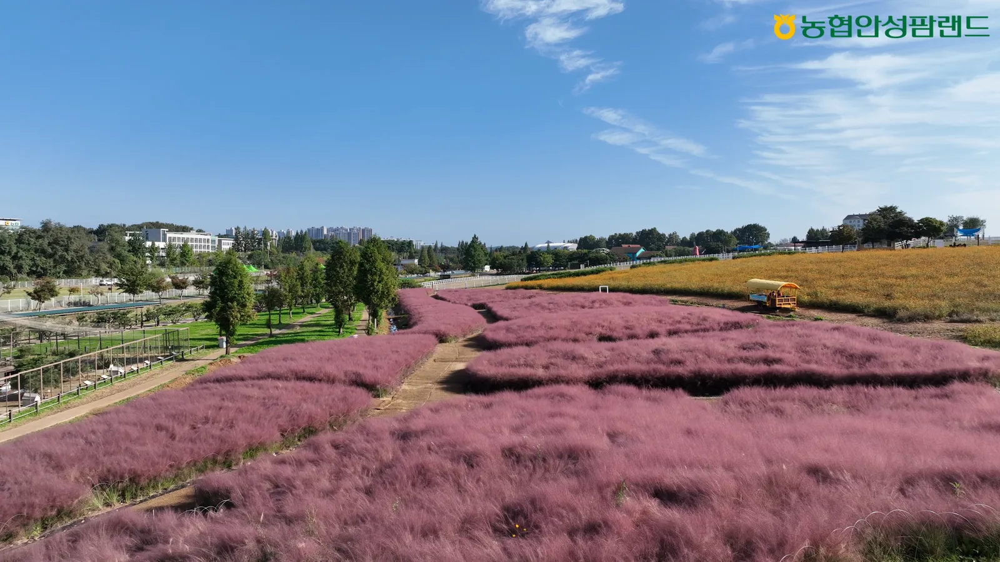

▲ 안성팜랜드 체험목장. 넓은 목장형 테마파크 안에 양·소·알파카 등 다양한 동물 체험 공간이 흩어져 있다 ⓒ 안성팜랜드
안성팜랜드는 드넓은 목장 부지를 그대로 테마파크로 꾸민 곳이라 자차로 방문하기 부담이 적다. 다만 입장료 자체보다 승마·놀이기구·먹이주기 체험까지 이어지는 요금 구성이 헷갈린다는 후기가 많다. 2026년 9월 기준 최신 요금표를 기준으로 주차부터 체험 프로그램까지 한 번에 정리했다.
1. 주차는 걱정 없다 — 대형 무료 주차장
안성팜랜드는 넓은 목장형 테마파크 특성상 1~3주차장을 무료로 운영하고 있다. 도심 쇼핑몰이나 관광지처럼 주차 요금이나 회전율을 걱정할 필요가 적어, 가족 단위로 여유 있게 방문하기 좋은 편이다. 성수기 주말에는 정문 인근 주차장부터 채워지므로, 오전 10시 개장 직후 도착하면 가장 가까운 자리를 잡기 쉽다.
2. 입장료 — 평일 할인가와 주말 정가가 다르다
| 구분 | 평일 할인가(B요금) | 정가·주말·공휴일(C요금) |
|---|---|---|
| 팜입장 소인 | 11,000원 | 13,000원 |
| 팜입장 대인 | 13,000원 | 15,000원 |
| 팜승마 소인 | 18,000원 | 20,000원 |
| 팜승마 대인 | 20,000원 | 22,000원 |
| 영유아(36개월 미만) | 보호자 동반 시 무료 | |
안성팜랜드 입장료는 고정 요금이 아니라 평일·주말에 따라 달라지는 등급제로 운영된다. 2026년 9월 기준 평일에는 최대 33% 할인된 B요금(팜입장 소인 11,000원·대인 13,000원)이 적용되지만, 9월 19일부터 시작되는 추석 연휴 등 주말·공휴일에는 정가인 C요금(소인 13,000원·대인 15,000원)이 적용된다. 소인 기준은 36개월부터 만 18세까지이며, 입장 시 의료보험증 등 나이를 확인할 수 있는 서류를 지참하는 것이 안전하다. 36개월 미만 영유아는 보호자 동반 시 무료지만, 어린이집 등 시설 단위로 방문하는 경우에는 유료로 전환되니 유의해야 한다. 요금은 계절과 여건에 따라 수시로 바뀌므로, 방문 전 공식 홈페이지의 'ABC 입장료 캘린더'에서 해당 날짜 요금을 다시 확인하는 것이 가장 정확하다.
안성팜랜드 이용요금 공식 페이지에서 확인 가능3. 체험승마 — 트랙 3바퀴, 8,000원
▲ 안성팜랜드 승마센터의 말. 체험승마는 트랙을 3바퀴 도는 코스로 진행된다 ⓒ 안성팜랜드
승마센터에서 진행되는 체험승마는 트랙 3바퀴를 도는 코스로 1인당 8,000원이며, 키 90cm·36개월 이상부터 60세 이하까지 이용할 수 있다. 다만 몸무게 90kg 이상이거나 치마를 착용한 경우에는 안전상 탑승이 제한된다. 미취학 아동이라면 별도의 미니말 승마(8,000원)를 이용할 수 있어, 나이대에 맞는 코스를 고르면 된다. 60세 이상 고령자는 체험승마 이용이 불가하니 가족 단위 방문 시 참고할 필요가 있다.
| 프로그램 | 이용요금 | 이용 기준 |
|---|---|---|
| 체험승마 | 8,000원 | 트랙 3바퀴, 키 90cm·36개월 이상~60세 이하(90kg 이상·치마 착용 불가) |
| 미니말 승마 | 8,000원 | 미취학 아동만 이용 가능 |
4. 놀이기구·액티비티 — 종목별로 요금이 다르다

▲ 안성팜랜드 익싸이팅파크의 놀이기구. 레이싱카트·범퍼카 등 유료 액티비티가 모여 있다 ⓒ 안성팜랜드

▲ 성 모양으로 꾸며진 어린이 놀이터. 별도 이용료 없이 자유롭게 이용할 수 있다 ⓒ 안성팜랜드
안성팜랜드의 놀이기구·액티비티는 입장료와 별개로 종목별 이용료가 붙는 구조다. 어린이 놀이기구는 회전목마·미니기차·미니바이킹 3종 중 1종당 4,000원이며 3종을 모두 이용하면 9,000원, 로켓·UFO 2종은 각 5,000원이며 2종 모두 이용 시 8,000원이다. 트램폴린(방방)은 20분에 5,000원, 전동자전거는 소형(2~3인) 14,000원·대형(4~6인) 20,000원으로 30분 동안 1바퀴만 돌 수 있으며 운전자는 자동차 운전면허 소지자여야 한다. 별도 구역인 익싸이팅파크에서는 레이싱카트가 1인용 20,000원·2인용 25,000원(10분), 깡통열차 5,000원(5분, 전 연령 동일 요금), 범퍼카·교통체험이 1인용 5,000원·2인용 7,000원으로 운영된다. 자전거·킥보드·인라인스케이트 등 바퀴 달린 놀이용품과 드론 반입은 안전상 제한된다.
| 구분 | 종류 | 이용요금 | 이용시간 |
|---|---|---|---|
| 어린이 놀이기구 | 회전목마·미니기차·미니바이킹(3종) | 1종 4,000원 / 3종 모두 9,000원 | - |
| 어린이 놀이기구 | 로켓·UFO(2종) | 1종 5,000원 / 2종 모두 8,000원 | - |
| 방방(트램폴린) | - | 5,000원 | 20분 |
| 전동자전거 | 소형(2~3인) | 14,000원 | 30분·1바퀴 |
| 전동자전거 | 대형(4~6인) | 20,000원 | 30분·1바퀴 |
| 익싸이팅파크 레이싱카트 | 1인용/2인용 | 20,000원/25,000원 | 10분 |
| 익싸이팅파크 깡통열차 | 전 연령 | 5,000원 | 5분 |
| 익싸이팅파크 범퍼카·교통체험 | 1인용/2인용 | 5,000원/7,000원 | - |
5. 동물 먹이주기 체험 — 알파카·소·양 마을

▲ 알파카네 집. 알파카마을은 목장 안쪽에 자리해 가까이서 알파카를 볼 수 있다 ⓒ 안성팜랜드

▲ 소 체험관 외관. 가까이 오면 위험하다는 안내문이 붙어 있을 만큼 소를 근거리에서 볼 수 있다 ⓒ 안성팜랜드

▲ 면양마을 축사. 꼬꼬네마을·토끼마을과 함께 동물 체험 구역을 이루고 있다 ⓒ 안성팜랜드
안성팜랜드의 핵심은 역시 동물 체험이다. 소체험관·꼬꼬네마을(닭)·알파카마을·면양마을·토끼마을이 구역별로 나뉘어 있어, 원하는 동물부터 골라 돌아보면 된다. 먹이주기 체험은 건초·돼지먹이가 1소쿠리에 2,000원, 새모이가 1봉지 1,000원이며, 말먹이(당근꼬치 4개)는 카페 쏘스윗이나 팜피크닉에서, 토끼먹이(1접시)는 현장에서 구매할 수 있다. 단, 안전사고 예방을 위해 외부에서 가져온 먹이(당근·건초 등)는 반입이 금지되며 반드시 내부에서 판매하는 먹이만 사용해야 한다.
| 먹이 종류 | 이용요금 | 비고 |
|---|---|---|
| 건초·돼지먹이 | 2,000원 | 1소쿠리 |
| 새모이 | 1,000원 | 1봉지 |
| 말먹이(당근꼬치) | - | 4개, 카페 쏘스윗·팜피크닉에서 구매 |
| 토끼먹이 | - | 1접시 |
6. 가을 시즌 명물 — 핑크뮬리 군락

▲ 안성팜랜드 핑크뮬리 군락. 9월 중순부터 11월 초까지 볼 수 있으며 10월경 절정을 이룬다 ⓒ 안성팜랜드
9월에 방문한다면 동물 체험 못지않게 핑크뮬리도 챙겨볼 만하다. 안성팜랜드는 넓은 초원 지형을 살려 봄에는 유채꽃, 가을에는 핑크뮬리와 코스모스를 대규모로 조성해왔다. 핑크뮬리는 통상 9월 중순부터 11월 초까지 볼 수 있고, 10월 중순 무렵 색이 가장 짙어진다. 넓은 부지에 펼쳐져 있어 산책하듯 걸으며 사진을 남기기 좋고, 인접한 트램(관람차) 코스를 이용하면 다리 부담 없이 군락 전체를 둘러볼 수도 있다.
7. 근처 다른 볼거리 — 안성 가볼 만한 곳
안성팜랜드 방문 후 시간이 남는다면 안성 시내의 다른 명소와 묶어 동선을 짜볼 수 있다. 안성맞춤랜드는 계절별 자연 경관을 즐길 수 있는 시민 휴식공간으로 가족 나들이에 적합하고, 미리내성지는 김대건 신부와 관련된 유서 깊은 천주교 성지로 조용한 산책과 역사 탐방을 함께 할 수 있다. 고즈넉한 분위기를 원한다면 석남사, 호수 풍경을 원한다면 고삼호수도 안성팜랜드에서 차로 이동 가능한 거리에 있다. 하루 일정으로 안성 전체를 둘러보고 싶다면 동물 체험과 자연 명소를 오전·오후로 나눠 계획하는 것이 효율적이다.
8. 방문 팁 — 운영시간과 준비물
방문 팁
- 운영시간은 하절기(2~11월) 평일 10~18시·주말 및 공휴일 9~18시(매표마감 17시), 동절기(12~1월)는 매표마감 16시·폐장 17시로 1시간씩 당겨진다. 설 당일을 제외하고 연중무휴다.
- 36개월 미만 자녀가 있다면 나이 확인용 서류(의료보험증 등)를 챙겨가면 안전하다.
- 체험승마·놀이기구 등은 이용요금이 종목별로 다르므로 방문 전 예산을 미리 가늠해두자.
- 먹이주기 체험은 외부 먹이 반입이 금지되니 현장에서 구매해야 한다.
- 주차는 무료지만 성수기 주말에는 오전 개장 시간에 맞춰 여유 있게 출발하는 것이 좋다.
- 도시락은 피크닉사이트에서만 허용되며 취사는 불가하다.
9. 정리
체크포인트
- 안성팜랜드는 1~3주차장을 무료로 운영한다.
- 입장료는 평일 할인가(소인 11,000원·대인 13,000원)와 주말·공휴일 정가(소인 13,000원·대인 15,000원)로 나뉘며, 36개월 미만은 보호자 동반 시 무료다.
- 체험승마는 8,000원(트랙 3바퀴), 놀이기구·전동자전거·익싸이팅파크는 종목별로 4,000원~25,000원까지 다양하다.
- 먹이주기 체험은 2,000원부터이며 외부 먹이는 반입할 수 없다.
- 9월 중순부터는 핑크뮬리 군락이 볼거리를 더한다.
- 방문 전 공식 홈페이지에서 날짜별 요금과 운영시간을 확인하는 것이 좋다.